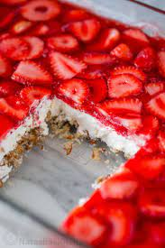

"Strawberry Pretzel Salad"

Strawberry Pretzel Salad is a sweet dessert consisting of 3 layers: a pretzel base, cool whip center, and a strawberry jello top. Its a nice Family dessert capable of filling that sweet tooth for the whole family
Ingredients
Crust:
- 3/4 Cup Margarine
- 3 Tbsp. Brown Sugar
- 2 1/2 Cups crushed pretzels
2nd layer:
- 1 8oz pk Cream cheese
- 1 cup white sugar
- 1 8oz Container Cool Whip
3rd layer:
- 1 Lrg Pk Strawberry Jello
- 2 Cups boiling water
- 1 Lb. slightly thawed strawberrys (sliced)
Instructions
- Grab a glass 9 by 13 pan to hold this beautiful creation. Lightly butter thw bottom and combine Margarine, brown sugar, and crushed preztels. Mix well and pat down.
- Bake at 350 for 15-20 minutes or till glowingly brown. Let cool completely.
- After that Cream together your cream cheese, sugar, and cool whip till its fluffy. spread mixture over pretzel crust.
- Dissolve jello in boiling water. While still hot add strawberrys and let cool.
- When partially set pour over cream cheese/ cool whip layer.
- Refrigerate till firm (about 8 hours or overnight)